01
Achievements
Rank 1 di kelas XII TJKT 1.
VIEW →
Siswa, penggemar teknologi, dan pembelajar kreatif yang fokus pada networking.
Fokus pada jaringan, pengembangan web, dan perangkat keras komputer — dengan pencapaian Rank 1 di kelas.
Rank 1 di kelas XII TJKT 1.
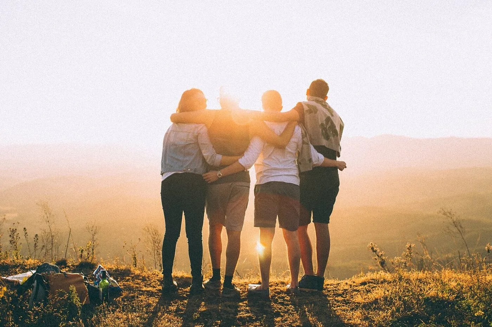
Sekolah, kelas, dan relasi profesional.
Rekomendasi dan target ke depan.
Sertifikat dan penghargaan.
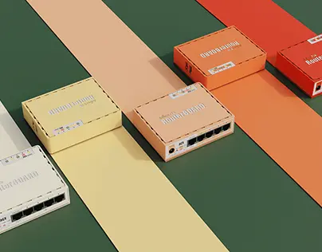
Proyek networking dan web.
HTML, CSS, JavaScript, MikroTik.
Konfigurasi jaringan dan routing menggunakan MikroTik untuk kebutuhan lab sekolah.
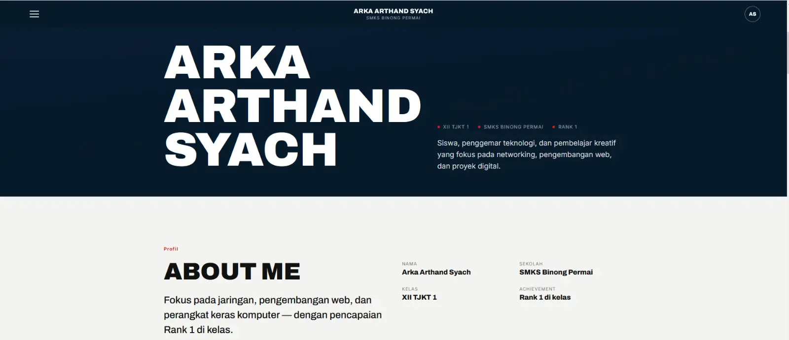
Membangun website responsif dengan HTML, CSS, dan JavaScript.
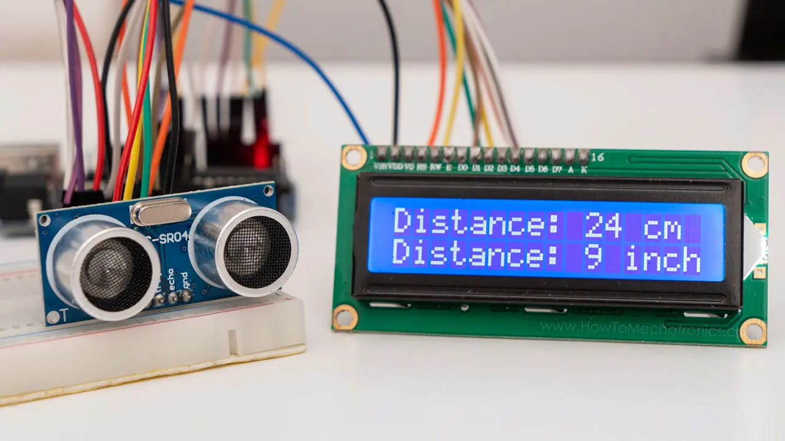
Proyek sensor jarak berbasis Arduino untuk deteksi objek.
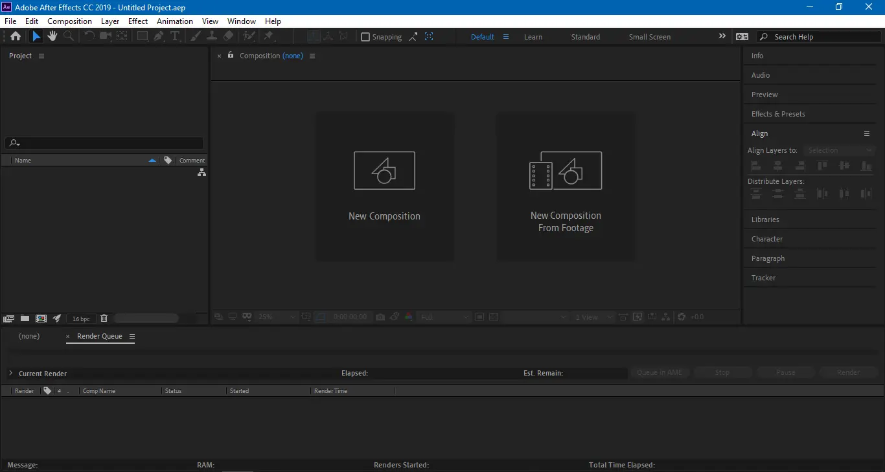
Proyek editing video dan konten kreatif digital.
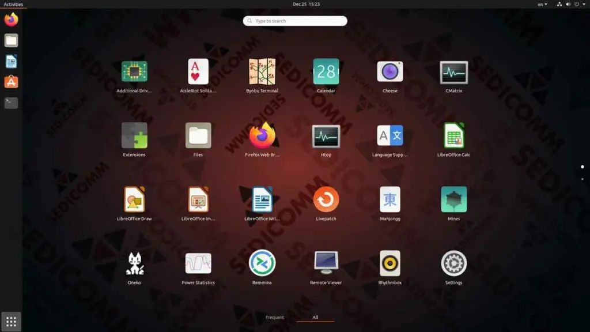
Penggunaan Linux dan VirtualBox yang lumayan mahir.
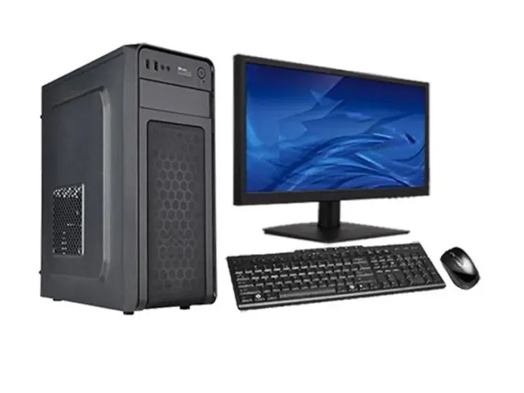
Penggunaaan dan pembuatan Komputer yang mahir.
HTML / CSS / JavaScript
MikroTik / Network Configuration
PC Hardware / Troubleshooting
Video Editing / After Effects
Portofolio ini menampilkan berbagai karya editing saya! Bukan hanya satu tipe konten.
Video featured di channel ano.cc21.
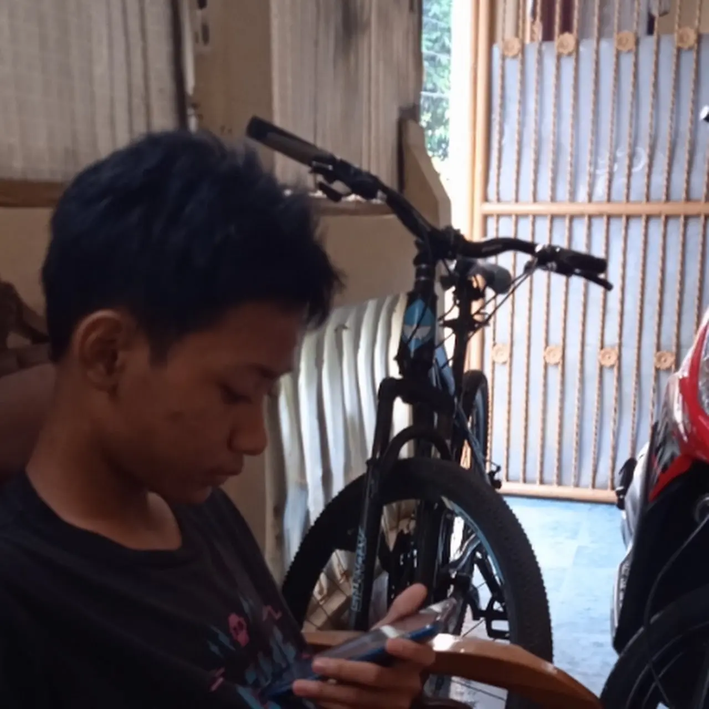
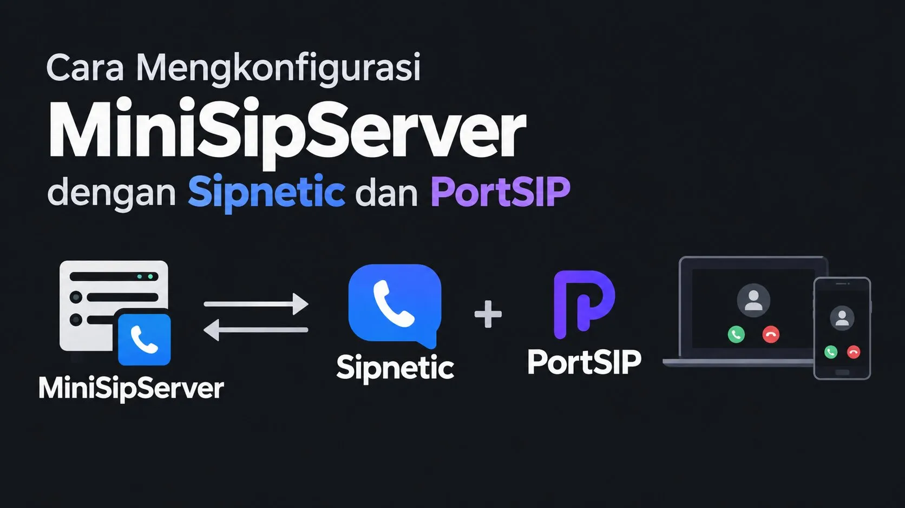
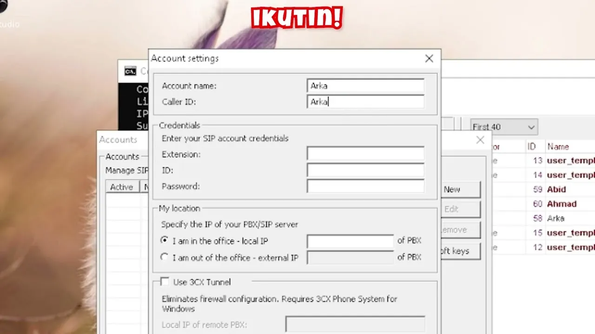
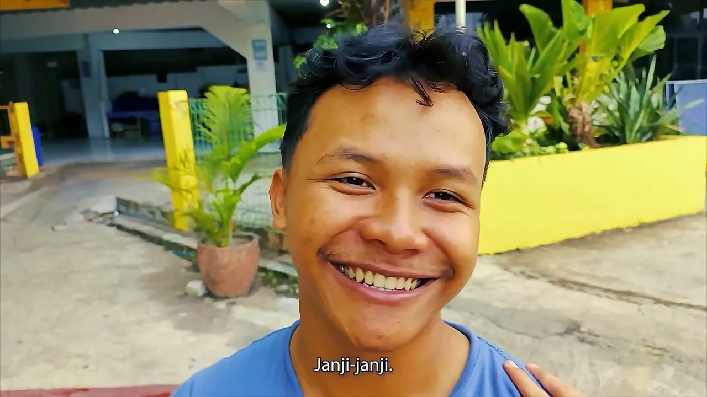
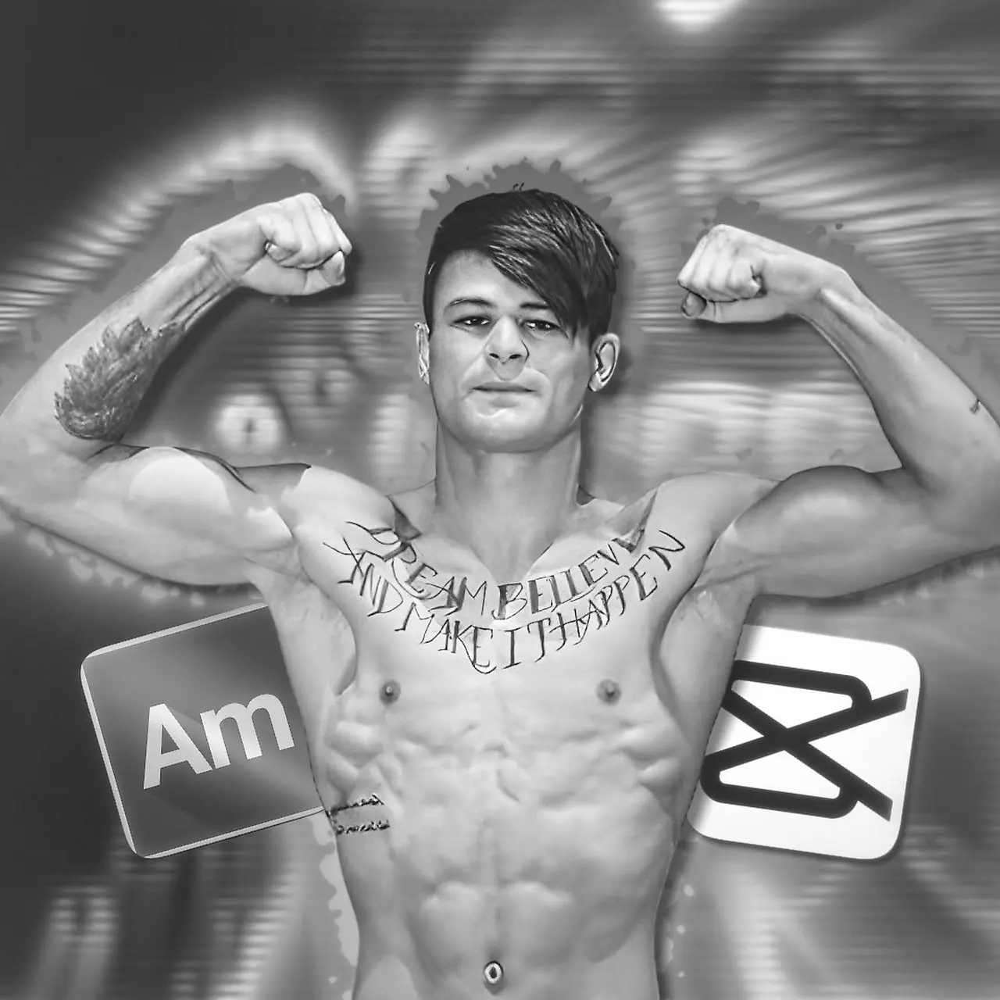
I'm a Capcut and Alight Motion editor, I don't steal edits unlike many other mobile editors, all are made within the apps I use..
GANTI caption singkat video pilihan di sini.
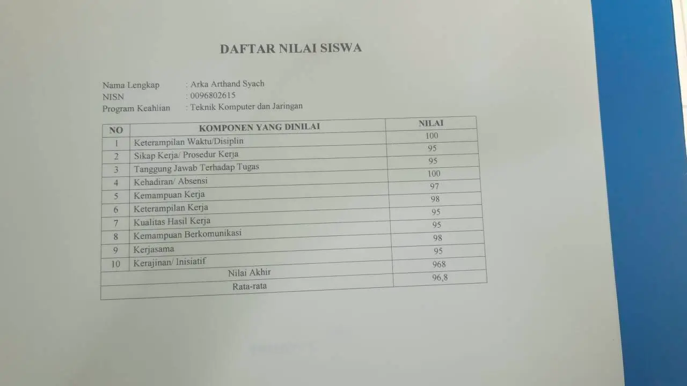
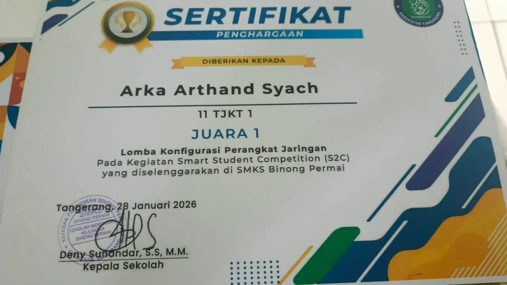
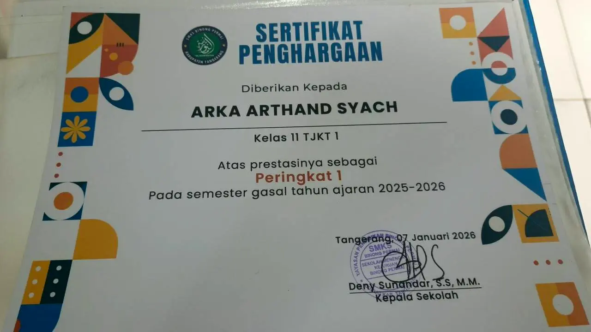
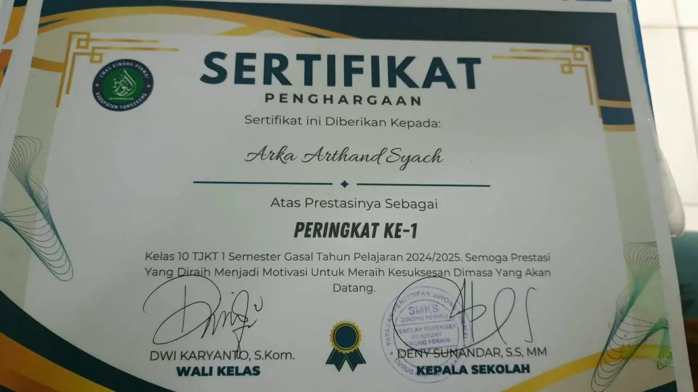
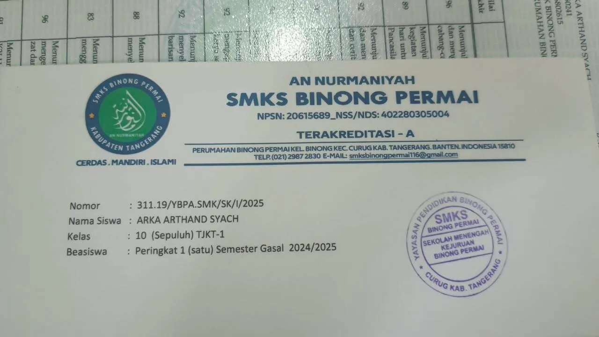
"Memiliki pemahaman materi yang sangat baik, sikap profesional, dan kepedulian tinggi terhadap sesama. Selalu berfokus pada tugasnya serta sangat andal dalam membagikan pengetahuan kepada rekan-rekannya."
"Memiliki penguasaan materi yang seimbang antara teori dan praktik. Selalu proaktif dan terbuka untuk membagikan ilmu serta membantu teman-teman yang membutuhkan."
"Interaktif, komunikatif, dan memiliki penyampaian materi yang terstruktur. Sangat dapat diandalkan dalam membantu serta mengedukasi rekan kerjanya.."
Otomatis = ikut setting terang/gelap HP atau laptop kamu.
Menyembunyikan dekorasi dan efek (partikel, aurora, blur, badge, penanda posisi, animasi) supaya tampilan lebih bersih dan ringan. Konten dan fitur tetap sama. Bisa dimatikan kapan saja.
Pilihan bahasa tersimpan otomatis.
Kalau dimatikan, foto di Hero tetap tampil tapi diam — gak ikut gerakan mouse. Website tetap normal seperti biasa.
Kalau dimatikan, semua efek gerak (muncul pas scroll, vignette, shimmer judul, dll) langsung tampil diam di tempat tanpa animasi — web tetap jalan normal, cuma lebih "kaku" dan ringan.
Mengurangi efek yang paling berat (partikel global, blur, zoom background) tanpa mengubah tampilan utama. Otomatis nyala di perangkat yang terdeteksi lemah/ngelag — bisa kamu matikan di sini.
Kalau dimatikan, video di section Media Creation gak jalan sendiri — tinggal tekan play. Kalau nyala, video hanya diputar saat terlihat di layar (hemat baterai & kuota).
Menyembunyikan semua tombol & navigasi supaya tampilan bersih dan layar penuh — cocok buat proyektor. Keluar dengan tombol Esc, atau tombol kecil yang muncul di atas layar.
Berisi cara mematikan musik, animasi, mode ringan, dan penjelasan semua fitur web.
Atur dulu biar web nyaman dipakai di perangkatmu. Pilihan ini tersimpan otomatis dan bisa diubah kapan saja.
Butuh bantuan? Tekan tombol ? di pojok atas kapan saja.